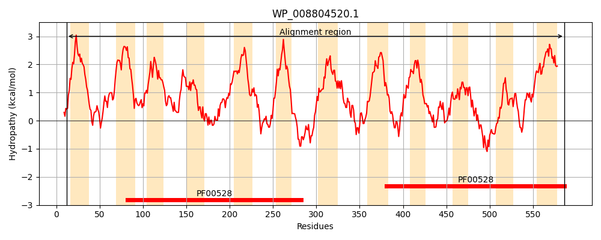
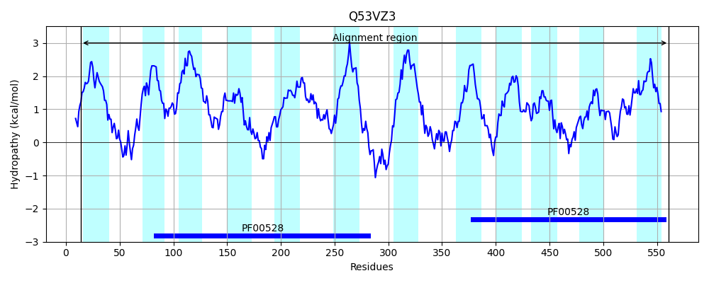

Hit Accession: Q53VZ3
Hit TCID: 3.A.1.20.5
Hit Description: gnl|BL_ORD_ID|14003 gnl|TC-DB|Q53VZ3|3.A.1.20.5 Putative iron ABC transporter, permease protein OS=Thermus thermophilus (strain HB8 / ATCC 27634 / DSM 579) OX=300852 GN=TTHB176 PE=3 SV=1
Mach Len: 576
e:0.000000
Query TMS Count : 12
Hit TMS Count: 12
TMS-Overlap Score: 8.950000
Predicted Substrates:None
BLAST Alignment:
Score: 1305 , Bit scores: 507 bits, E-value: 5.4e-175, Alignment length: 576, Percentage identity: 44
Query: 12 PRGVVVCITALVIYVPLLFIVVQSFLSAPFFSRSKSWSLEAFAFIFTDPDFYLALRSGFILAFGLVIIAIPLGGILAFLMVRTDLPGRRIIEPLILVPIFVSPMVLGFGYVVAAGPVGFFSQWAQQLIGFVPWNIYSMFSIVVIAGLTHVPHAYLYISSALRSVGSDVEEAARTVGATPLQVMTSVSLPMVRPSILYACVLLFFLGLEVFGLMLVLGDPEGNMVLATYLYKLTNKLGTPSYHLMAAVAVVLICITIPLVMLQRRLM-RTANRFVTMKGKASQARALPLGKWRWVAGAVVVAWLTVTIGVPLLGVALRAFISNWGVGVSLWDELSLATFHNIWQQPNLLRAIVNSMAIGIVGGALAVICYLFVGIAMHRKADNVTRFLDYSVLVPRAVPGLLAGLAFLWVFLFVPMWLDQSLKHGWLSALPVADWLREHLIVQLRALRNTIFSVWLAYTVVWMAYGLRLISSTLLQVGPELEEAARSTGASRGQITRHVTVPLSRYGLIGSWLLMFLIFEREYSTGVYLLSPGTETIGSMLVSLWAAGAIDIVAALSFINILLVVIGLGIALRFGVK 586
P ++ L++ P+ +V QS L+APFF+ +K ++LEA+ ++ DP F AL++ F++ G+V+IA+PLG + AFL+ +TDLP R+ E L+L PIF+S ++LG G++VA GP G S W + L+G VPW IY++ +I VIAGLTHVP+ YLY++S +++V + +EEAAR GA P QV SV+LP+VRP+++Y+ L+ LG E+FGL LVLGD +G MV+ TYLY+LT GT +YHLMAAV+V+++ I LV+LQR L+ R R+V + + + LPLG+ R+V + +L V + +P+LGV R+ +++WG GV L + ++ + ++++ PNL RA+ N++ + +GG LA+ YL + + + R R LDY +PRAVPGL+ GLAFLW+FLF P+A W RNT+F++ LAYTVVWM YG+RL+++ LLQVG E+EEAAR GAS + H T+PL + G++ +W L+F+ F REYSTGVYL++ GTE +G+ +V+LW GA+D++AAL+ + +L+V +A R GV+
Sbjct: 14 PLALLTGAVGLLVLAPIGILVYQSLLTAPFFAPAKRFALEAYRYVLHDPYFLEALKNSFLIGLGMVLIAVPLGSLFAFLVTKTDLPFARLFELLLLAPIFISAIILGIGFIVAFGPSGVVSGWVESLLGHVPWTIYTLPAIAVIAGLTHVPYVYLYVASTIQNVDASLEEAARVAGARPYQVALSVTLPLVRPALVYSGALMLLLGFELFGLPLVLGDAKGIMVVTTYLYRLTAITGTSAYHLMAAVSVLIVLIAFTLVLLQRYLVGRMEGRYVAIGARGYRTERLPLGRLRYVWAFALALYLLVAVVLPVLGVVFRSLVTSWGPGVDLREVFTVGHYADVFKLPNLSRAVTNTLWVAALGGLLALAFYLLIALGIQR-GRGFGRVLDYLAGLPRAVPGLIMGLAFLWIFLFFK---------------PIAPW------------RNTLFALVLAYTVVWMPYGVRLLTAALLQVGREVEEAARIAGASPVRAFLHGTLPLLKGGVLTAWFLLFIQFVREYSTGVYLMTAGTEVLGAQIVALWGTGAVDVIAALATLQVLIVSGVFVLANRLGVR 561 | Protein Hydropathy Plots: |
|---|
|  |  |
Pairwise Alignment-Hydropathy Plot:
|
|---|
 |